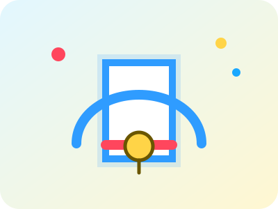

Anywhere Door

A teleportation gateway designed for instant travel, surprise visits, and dramatically reducing commute times across space.
Selected Gadget Highlights
Each project below represents a signature Doraemon gadget or support system. The layout is intentionally responsive so the cards reorganize smoothly as the page width changes.

A teleportation gateway designed for instant travel, surprise visits, and dramatically reducing commute times across space.
A compact flight accessory that gives users temporary aerial mobility when stairs, traffic, or geography become a problem.
A timeline navigation platform for investigating cause and effect, repairing mistakes, and learning from alternate outcomes.
A high-risk but memorable studying tool that transfers textbook content instantly, ideal for dramatic pre-exam preparation.
A precision scaling device for making oversized obstacles manageable and opening up more creative pathways through a challenge.
The companion tool to Small Light, useful when small ideas need extra presence, visibility, or physical scale.
A communication aid that removes language barriers and makes cross-cultural teamwork possible in seconds.
Doraemon's core storage platform, balancing rapid retrieval, huge capacity, and the occasional chaos of too many useful tools.